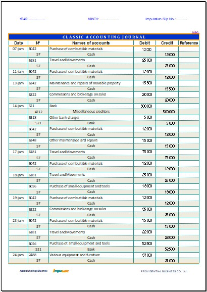

Overview of the FRONT page of the accounting journal
This screenshot illustrates an overview of the FRONT page of the accounting journal. It allows you to visualize the full structure of a typical page in IMPUMAT and makes it easier to understand the organization of accounting entries.
Download the English version of IMPUMAT